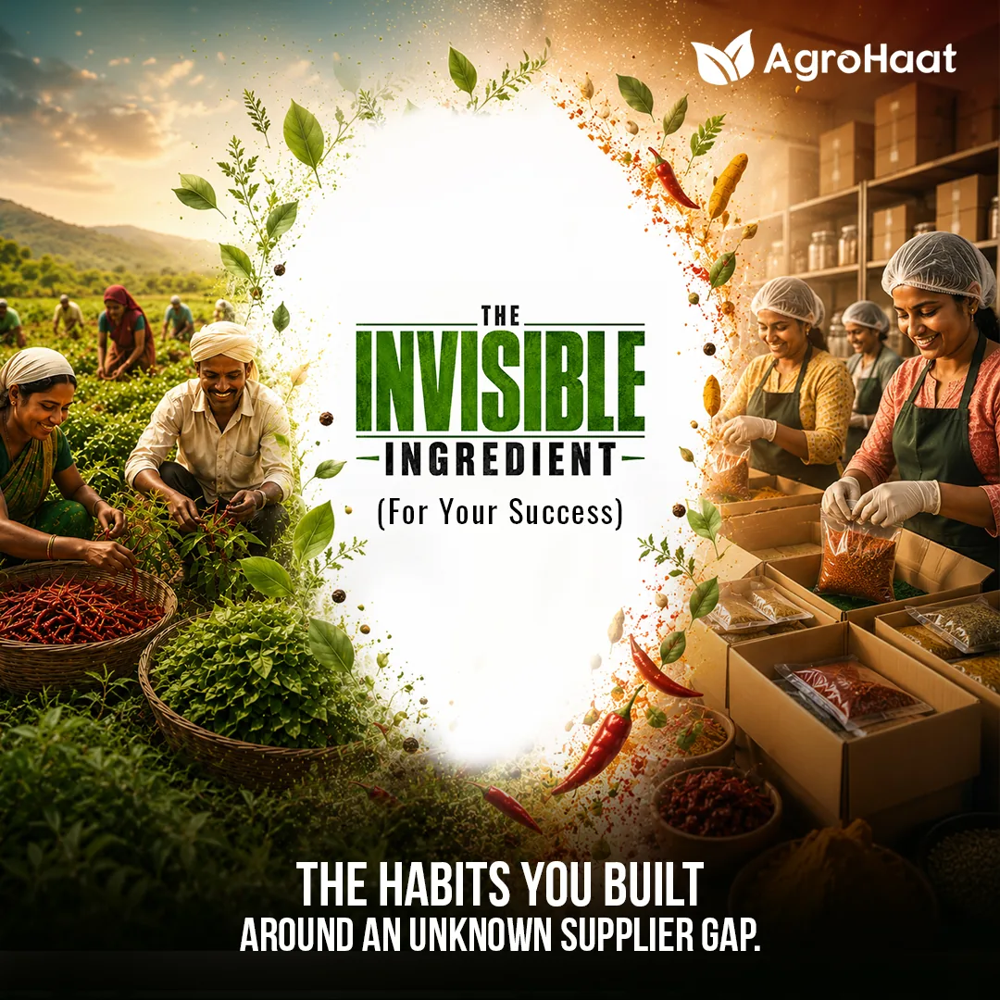
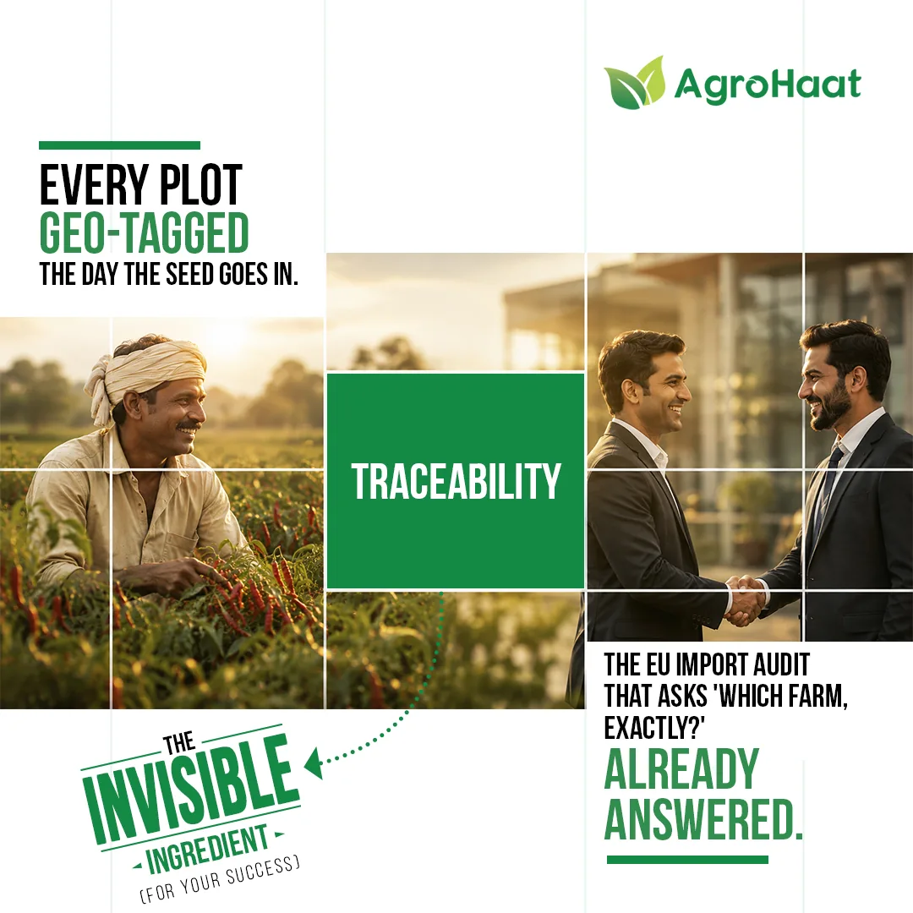
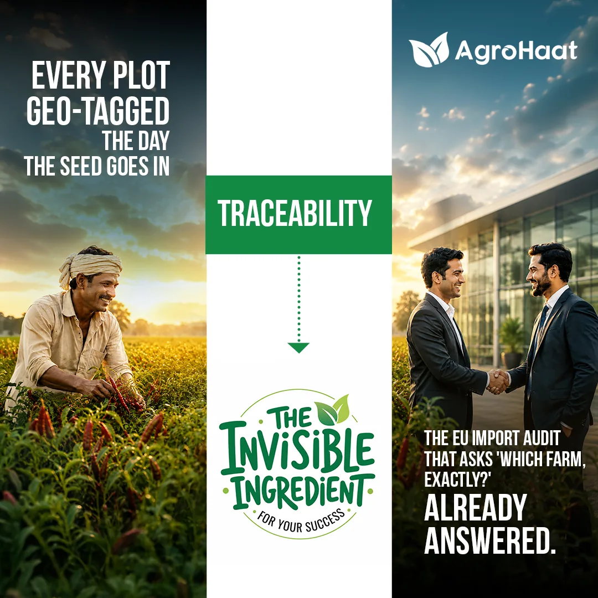
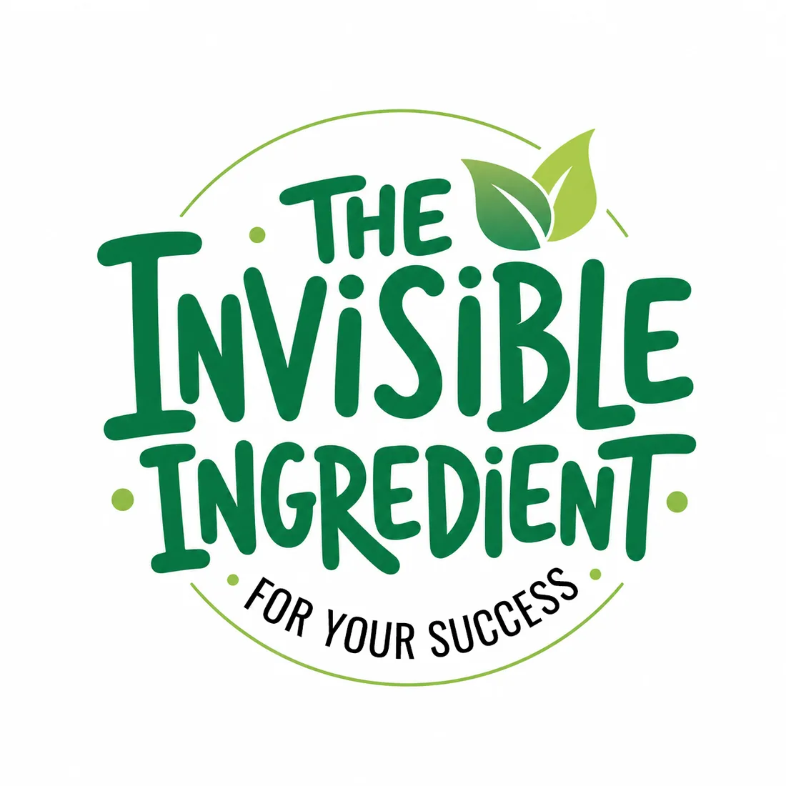
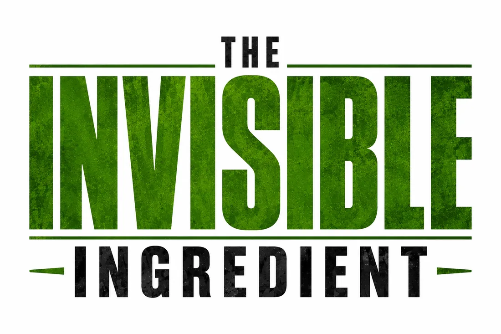

AgroHaat by BigHaat · 2025The
Invisible
Ingredient
Seven words, one proof system: how I made a decade of unglamorous export infrastructure visible to buyers who only read spec sheets.

AgroHaat exports spices, grains and botanicals to buyers in the US, UK and EU, on top of a decade of infrastructure that never appeared on a spec sheet: geo-tagged farm origin, processing capacity, certification coverage, a farmer sustainability programme. Every exporter in the category claims traceable, certified and sustainable. AgroHaat's version was real and completely invisible, so buyers ran their own redundant audits instead.
The constraint was credibility, not volume. Another claim would sit beside a hundred identical ones. The strategy work was blunt: the data-led buyer leaves if the value is not clear in two minutes, and the trusted trader believes a sample before a certificate. So the identity could not be a badge. It had to work in an email subject line, a sixteen-page dossier and a two-minute booth read.
Everyone claims it.
AgroHaat proves it,
one word at a time.
AgroHaat had spent a decade building infrastructure that buyers never saw: geo-tagged farm origin, processing capacity, certification fit by market, a 20,000-acre sustainability programme, awards, and a 24-hour enquiry reply. The idea named each one as an ingredient and revealed them in order, Proof, Assurance, Access, Resilience, Origin, Validation, Speed, each closing a gap the buyer's own process had been working around. It turns trust me into verify it yourself.
- Seven-pillar verbal system: Proof, Assurance, Access, Resilience, Origin, Validation, Speed, each named plainly once and tied to the buyer's own workaround question, such as 'which farm, exactly, did this batch come from'.
- The triptych: grassroots process on the left, the named ingredient in the centre, the buyer's specific requirement on the right, held identical across digital, print and live selling.
- Six formats on one device: pillar-reveal and audit follow-up emails, a sixteen-page matte dossier with no stock photography, a pocket trade-show leave-behind with a QR to the Sourcing Habits Audit, a sample kit insert, a five-card LinkedIn carousel and a three-slide sales deck opener.
- Proof written into the copy: BigTrace batch records, processing and grinding capacity with a multi-stage QC facility in Guntur, the certification stack mapped by market, SDP acreage and farmer counts, and named, dated recognition.




What the identity system made visible, proof points, not measured results.
Client: AgroHaat by BigHaat. Campaign creatives reproduced with permission.